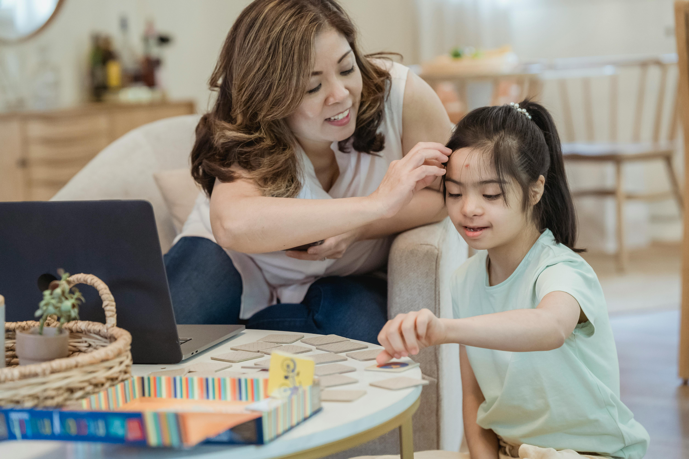
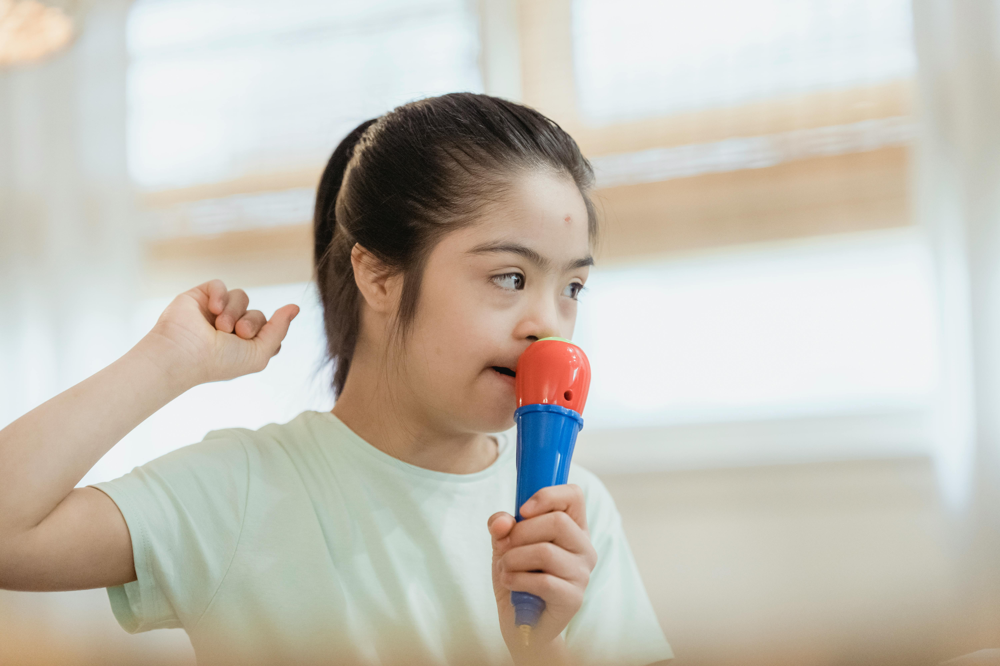

Autism Allies is a highly coustamizable and interactive game which is developed to make the individuals with autism ”society ready” and make their life easy. This game is first person simulation game which deals with the day to day activities and it helps the players to recognize in game materials and relate the situations to real life. Autism Alllies is mainly desgined for kids who are developing autism in early stages. People above 4 yrs can easily manage to play this game and there is no age limit after this. This game deals with one word commands and colourful interfaces, which can be custmized acoording to player’s comfort.
The main game is based on the simulation of daily activities like brushing, wearing clothes and shopping and other life essentials. By playing these games as a practice player can relate the in game scenarios with real life. Usually the individuals diagnoized with autism usually need repeated commands for them to do thir work properly. By playing this game regularly there is a high chance of the indiviual to relate it to rela life and implement it. These tasks help in buliding their confidence and helps them to live independently..


We have consulted many disability schools, but our biggest support came from NIMH doctors and Dr. Anil Kundra, who allowed us to visit his ashram in Shamirpet. Visiting the ashram changed our vision on autism and its treatment. Dr. Anil Kundra mentioned, “Kids here play with tabs for an hour in the evening. They don’t ask for any support while playing games, and they don’t get triggered. Your game can help kids improve their social skills if developed on point as your idea is.”
How can someone with sensory issues play a game? Is developing a game for autistic individuals a great idea? The answer is “YES.” According to research, individuals with autism can play games and use mobiles and tablets effectively. With a comfortable environment, discomfort can be minimized. Their strong visual and spatial skills make games an effective tool for learning and entertainment.
Dr. Anil Kundra observed that kids and adults diagnosed with autism at the Autism Ashram in Shamirpet play games effectively and get easily entertained. Developing a game is definitely a great idea for individuals with autism.